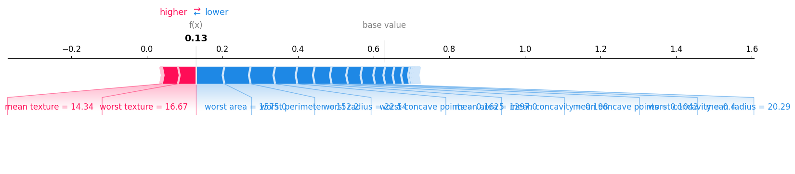
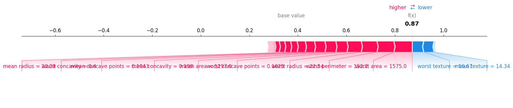
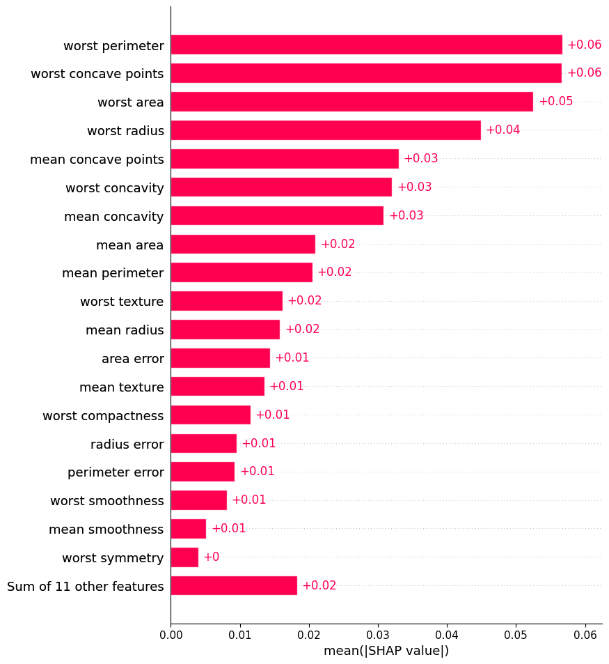
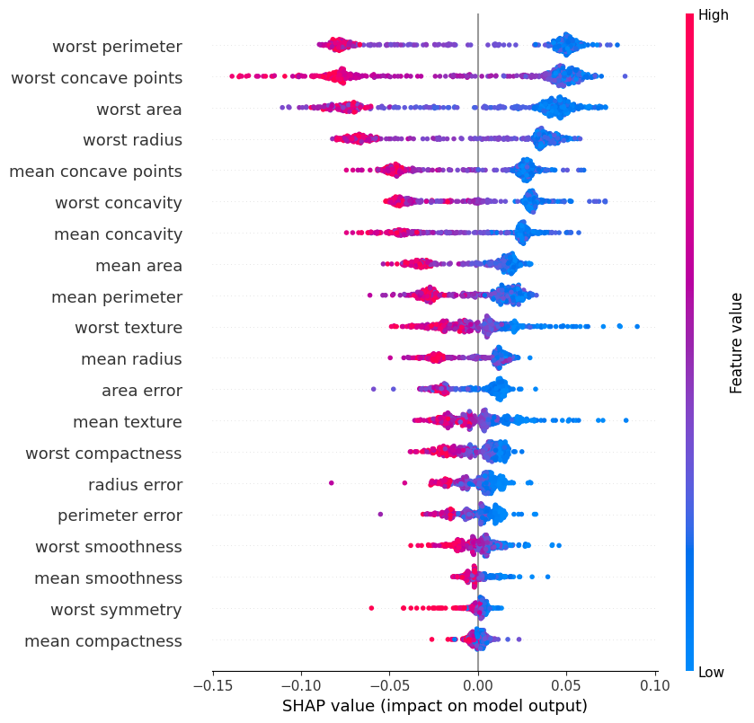
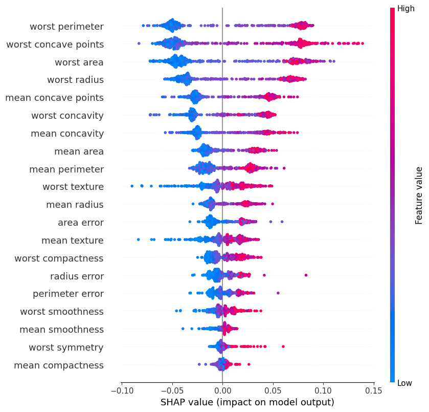

SHapley Additive exPlanations is a model-agnostic method, which means that it is not restricted to a certain model type, and it is a local method which means that it only provides explanations for individual samples. However, the individual explanations can be used to also get global interpretations. SHAP was introduced in 2017 by Lundberg et al.
Load the necessary libraries (install using pip install shap if you haven't already):
1 | |
We start by loading the model built using all of the features:
1 2 3 4 5 | |
We compute the SHAP values using shap.TreeExplainer which implements the TreeSHAP method. The SHAP values explain why a prediction for a single observation differs from the average prediction for all the observations in the data set.
1 2 3 4 5 6 7 | |
As you can notice form the numbers above, the model's average prediction and the SHAP expected value differ for both classes. Why is that the case?
When using TreeExplainer for a Random Forest model, there will be small variations between the average model prediction and the expected value from SHAP.
To get the exact same values, we provide a background dataset for integrating out features. This dataset has to be passed to an Independent masker, which correctly subsamples the data (otherwise only the first 100 samples are subsampled and the expected value might show high variations).
In addition, when using SHAP to explain a classifiers output, the default value in TreeExplainer for model_output="raw", which explains the raw output of the model. For regression models, "raw" is the standard output. For classification this is the log odds ratio. We can set the model_output="probability" explaining the output of the model transformed into probability space, i.e. SHAP values now sum to the probability output of the model.
1 2 3 4 5 | |
For classification task, shap explainer produces two expected values, corresponding to the average probability for each class
Now, we can retrieve the SHAP values for our dataset and process them for the visualizations.
1 | |
Notice that the shapley values matrix is the same size as our input matrix that contains all the feature values for each observation (i.e., each row of the matrix). That means there is one Shapley value for each entry in our feature matrix. Hence, each observation (row) has a Shapley value for each of its features (columns) that explains that feature's contribution to the model's prediction for that observation.
1 2 | |
One major difference when analysing classification models with SHAP, compared to regression models, is that we will get one shapley value matrix and expected value per class. Hence, in our case we will get two SHAP value matrices and expected values because we have two classes in the dataset.
Note: the order of the SHAP value matrices and expected value output is the same as the sorting of the target classes.
The SHAP package provides several visualizations that help us understand how each feature contributes to an individual prediction. Let's look at the prediction for a single observation (row) in our data set.
1 2 | |
The force plot visualizes each feature's effect on the prediction for our single observation, given the current set of feature values. We have red forces which shift the prediction value () to a higher value and blue forces which shift the prediction value to a lower value. This plots helps to understand which features ("forces") contribute to the difference between the average prediction and the actual prediction of our observation of interest for each class. The features closest the actual prediction value () have the higest impact on the model's prediction. This plot is useful when the number of features is not too high. For an application example on medical data.
Note: The Shapley value can be misinterpreted. The Shapley value of a feature value is not the difference of the predicted value after removing the feature from the model training. The interpretation of the Shapley value is: Given the current set of feature values, the contribution of a feature value to the difference between the actual prediction and the defined baseline is the estimated Shapley value.
1 2 | |

1 2 3 | |

We plot one force plot per class (class 0: control, class 1: cancer) for our observation of interest, which is a cancer patient that has been classified as "cancer".
In the first plot, we get the feature contributions to the predicted probability of belonging to the control class, which is 13% (). The average predicted probability for control class is however 62%. The force plot now indicates which features contribute to the difference between the predicted value of 13% and the expected value of 62%. We can see that the features worst area and worst perimeter are the top contributors to a lower predicted probability, whereas the feature worst texture and mean texture contribute to a higher predicted probability.
In the second plot we have the same information for the predicted probability of belonging to the cancer class, which is 87% ($f(x)=0.87$). We see that the forces are basically reversed, where the features that contributed most to a lower predicted probability in the first plot now contribute the most to a higher predicted probability in the second plot.
The SHAP package also provides decision plots, waterfall plots and other plots for visualizing local explanations. For more information on the different plots see here.
The local explanation plots are great for looking at the model's predictions with granularity. But what if we want a simple summary of how important each feature is in making predictions for the entire data set - something like feature importance?
The SHAP package covers this case by providing a global feature importance plot, where the global importance of each feature is taken to be the mean absolute SHAP value for that feature over all the given samples. Below we plot the mean absolute SHAP values for class 1.
1 2 | |

Just to make sure we understand what's happening here. Remember, each row of the dataset is an observation representing a patient, and we have 455 patients. Each column is a feature, and there are 30 features. All we did in the calculation above was to average all the (absolute values of the) 455 SHAP values in each column. That gives us 30 sums, one for each feature, and those are our 30 feature importances for this model (only 20 plotted above). It's that simple.
Let's pause and consider this for a moment because this is a really important point: the feature importance for the entire model is calculated directly from their importance for individual observations. In other words, the importance is consistent between the model's global and local behavior. This consistency is a remarkable and really important characteristic that many model interpretability methods do not offer.
The SHAP package also provides local bar plots, bar plots separated by cohorts or ordered by feature clustering. For more information on the different bar plots see here.
The SHAP package also provides a more granular look at feature importances for the entire data set. When we want to visualize the SHAP value summary as a beeswarm, we have to do the visualization class-wise again.
1 2 | |

1 2 | |

The beeswarm plot is designed to display an information-dense summary of how the top features in a dataset impact the model’s output. Here, the Shapley values of every observation are plotted for each feature. Additionally, the coloring indicates whether low (or high) values of each feature increase (or decrease) the model's predictions. For example, we can see that low value for worst perimeter, worst concave points, worst area and worst radius increases the probability of being predicted as control (i.e., the Shapley values are greater than zero).